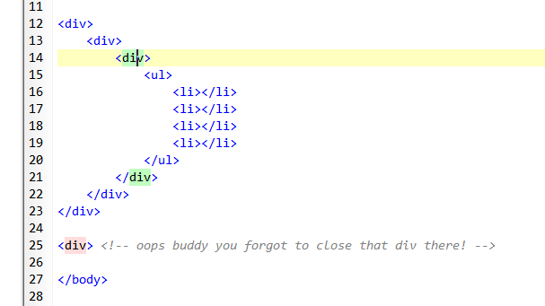
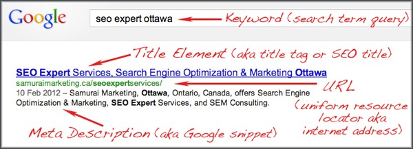
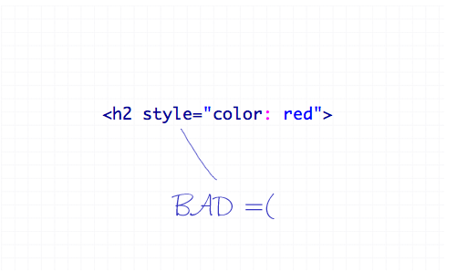
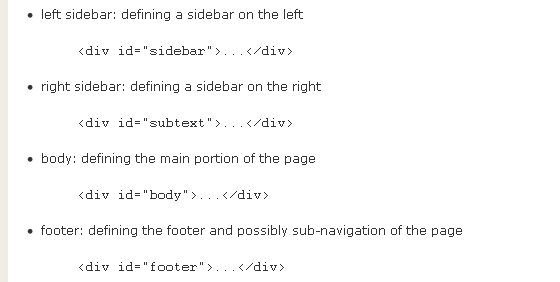

15 prácticas recomendadas de HTML que los
desarrolladores deben conocer
Este post está dedicado a aquellos que acaban de entrar en el mundo
del desarrollo web. A continuación encontrará 15 consejos para escribir HTML.
Básicamente, esta es la guía para principiantes de las mejores prácticas de HTML.
La mayoría de las páginas web utilizan HTML. Las prácticas mencionadas a
continuación no solo lo ayudarán a crear un código limpio y bien estructurado,
sino que también facilitarán la optimización del motor de búsqueda. Espero que
esto ayude a realizar una conversión efectiva
Cierra las etiquetas
Sin embargo, es muy simple, pero aún así es una práctica común que vemos en la
vida cotidiana. A veces, incluso omitimos las etiquetas ol> y ul>. Además,
muchos optaron por omitir las etiquetas LI de cierre también. Es urgente abordar
este problema; de lo contrario, enfrentará problemas de validación y
compatibilidad con respecto a la codificación.
Uso de etiquetas de título significativas
Una de las cosas más importantes que ayuda en el proceso de optimización de
motores de búsqueda del sitio web es el uso de la etiqueta de título. La etiqueta
de título ayuda a que la página web sea significativa y amigable con los motores
de búsqueda. El texto escrito en la etiqueta del título se muestra en las SERP.

Etiquetas meta descriptivas
Aparte de las etiquetas de título, otras cosas importantes que ayudan en la
optimización de motores de búsqueda del sitio web es el uso de metaetiquetas
meta descriptivas. Cuando el internauta escribe una palabra clave en la barra de
su motor de búsqueda, las metaetiquetas son los atributos que hacen que la
página web sea más significativa y, por lo tanto, las arañas de los motores de
búsqueda podrían ubicar fácilmente la página requerida para usted. ¿Como
funciona? La meta descripción dice de qué se trata la página web. Describe
brevemente el propósito del sitio web. La descripción difiere de una página
a otra. Debe escribir un texto preciso diferente en la etiqueta de meta descripción
para cada página web.
Uso del metaatributo de palabra clave
Estos atributos básicamente constituyen una lista de palabras clave y frases
relacionadas y relevantes separadas por comas. Estas palabras clave también
funcionan a favor de hacer que la página web sea más significativa. ¡No seas
malvado, no hagas spam! Amablemente, no intente hacer solo relleno de
palabras clave, ya que no lo ayudará en el largo camino. Solo necesita agregar
algunas palabras y frases que describan su página web de manera adecuada.

Evite el uso de estilos en línea
Hay tres formas de insertar una hoja de estilo. Un estilo en línea pierde muchas
de las ventajas de las hojas de estilo al mezclar contenido con presentación. ¡Use
este método con moderación! Para usar estilos en línea, use el atributo de estilo
en la etiqueta correspondiente. El atributo de estilo puede contener cualquier
propiedad CSS. El ejemplo muestra cómo cambiar el color y el margen izquierdo
de un párrafo:
' style= "color:sienna;font-size:20px">Esto es un párrafo.'
Aunque se ve bien, puede causar errores en las prácticas de codificación. Cree
siempre un archivo CSS separado para sus estilos. Simplemente evite hacer
estilos mientras está codificando. Pero sí, una vez que haya terminado con la
parte de codificación, puede comenzar agregando estilos.
Coloque los archivos JavaScript en la parte inferior
Debe colocar correctamente un JavaScript en una página HTML para asegurarse
de que el navegador lo ejecute. No es particularmente difícil, pero hay que
separar el comportamiento (JavaScript) y la estructura (XHTML). Uno de los
parámetros principales en el algoritmo de Google para clasificar un sitio web es
el tiempo de carga del sitio web. Uno de los principales objetivos del desarrollo
web es reducir el tiempo de carga del sitio web. Simplemente coloque esos
archivos JavaScript (si el propósito es solo agregar funcionalidad) en la parte
inferior, justo antes de la etiqueta del cuerpo de cierre porque al cargar un script,
el navegador no puede continuar hasta que se haya cargado todo el archivo. Los
usuarios tendrán que esperar mucho antes de que aparezca algo en la pantalla.
Divide tu diseño usando divs
El uso de la etiqueta <"div"> le permite definir la página en términos de las
divisiones lógicas de la página, no solo las ubicaciones en el diseño. Si está
utilizando la etiqueta <"div"> en combinación con CSS, creará una página que es
fácil de administrar. En general, sucede que una página web está constituida por
diferentes secciones de contenido, por lo que al usar estas etiquetas para
dividirlas, estará listo para diseñarlas como desee. El uso excesivo de etiquetas
<"div"> también es una mala práctica. Algunos desarrolladores usan esta etiqueta para envolver múltiples etiquetas <"div">
que contienen más etiquetas <"div">, creando una montaña de divs. No tiene sentido usar esta etiqueta como último
recurso cuando no se encuentra ninguna otra etiqueta adecuada.
 Nombres de etiquetas en minúsculas
Mantener el marcado en minúsculas es una buena práctica. Aunque ponerlo en
mayúsculas no causa ningún daño, sí afecta la legibilidad del marcado. Por lo
tanto, es bastante bueno si mantiene todos los nombres de las etiquetas en
minúsculas. También se ve bien a nuestros ojos.
Agregar atributo alt en las Imágenes
La etiqueta 'img' incrusta una imagen en una página HTML. Tiene dos
atributos obligatorios: src y alt. El texto ALT debe estar compuesto como una
alternativa textual adecuada a la imagen: a veces eso puede resultar ser una
descripción de la imagen, pero en la práctica esa elección parece estar
equivocada con más frecuencia de lo que es correcto. Usar un atributo alt
significativo es muy importante para escribir código válido y semántico. Es
posible que algunos hayan ignorado esta parte, pero el desarrollador debe
completar estas secciones por motivos de validación y accesibilidad.
Uso adecuado de los encabezados
Use etiquetas adecuadas para mejorar el SEO de su sitio. Las etiquetas de
encabezado son un elemento muy importante para crear y mantener un sitio web
o blog compatible con los motores de búsqueda. Hay seis niveles de encabezado.
Estos niveles son los siguientes: H1, H2, H3, H4, H5, H6. La etiqueta de
encabezado H1 es el tamaño de fuente más grande y H6 es el más pequeño. Los
motores de búsqueda buscan etiquetas de encabezado porque forman
representaciones para encontrar contenido, así como rutas en su blog o sitio
web.
Terminar la navegación con la lista desordenada
Casi todos los sitios web/blogs tienen algún tipo de estado de navegación. No es
necesario que utilice la etiqueta 'div' para concluir la sección de navegación.
Más bien, usa 'ul' para terminarlo. La etiqueta 'ul' está destinada a contener
una lista de elementos.

Usar reinicio de CSS
Es un tema bastante discutible sobre el uso del reinicio de CSS. La mejor salida
posible es desarrollar nuestro propio restablecimiento de CSS. Puede comenzar
con el restablecimiento de CSS popular como el de Eric Meyer, y luego puede
incorporar gradualmente su propio estilo de acuerdo con sus requisitos. Si no
hace esto, realmente no entenderá por qué los elementos de su lista reciben ese
poco de relleno adicional cuando no lo especificó en ninguna parte de su archivo
CSS.

Aprenda a usar los elementos HTML correctos en el
lugar correcto
Con el tiempo, asegúrese de conocer todos los elementos HTML. Úselos
correctamente para una estructura de contenido semántica y significativa.
Por ejemplo:
· El elemento <"p"> define un párrafo en el documento HTML.
· El elemento <"body"> define el cuerpo del documento HTML.
· <"ul"> (listas desordenadas) cuando el orden de los elementos de la lista
no es importante.
· <"ol"> (listas ordenadas) cuando el orden de los elementos de la lista es
importante.
· dl> (listas de definiciones) para pares ítem/definición.
· En lugar de usar <"i"> y <"b">, use <"em"> para enfatizar y <"strong"> para
enfatizar mucho.
· En lugar de utilizar <"br"> para insertar una línea entre párrafos, utilice
las propiedades de margen y/o relleno de CSS.
Todas estas cosas juegan un papel importante en la conversión exitosa
Ver fuente
Nadie se vuelve perfecto en el primer movimiento. En las etapas iniciales, puede
visitar algunos buenos sitios web y ver cómo han codificado diferentes secciones
del sitio web. Incluso puede buscar un buen Javascript utilizado por otros y
puede aplicar algo similar en su trabajo. Vea la fuente y busque en la etiqueta
HEAD el nombre del script. Es bueno aprender de los demás, pero no sigas la
mala práctica de robar el diseño de otros.

Validación de la Codificación
Debe validar su marcado continuamente. ¡Bien! No es que un marcado que no
esté completamente validado sea un mal marcado, y que esté completamente
validado sea un gran trabajo.
Pero aún necesita descargar la